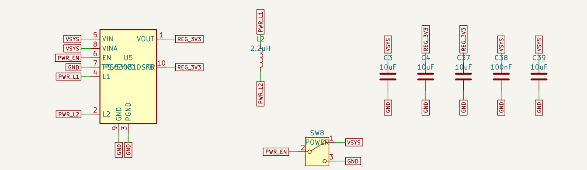
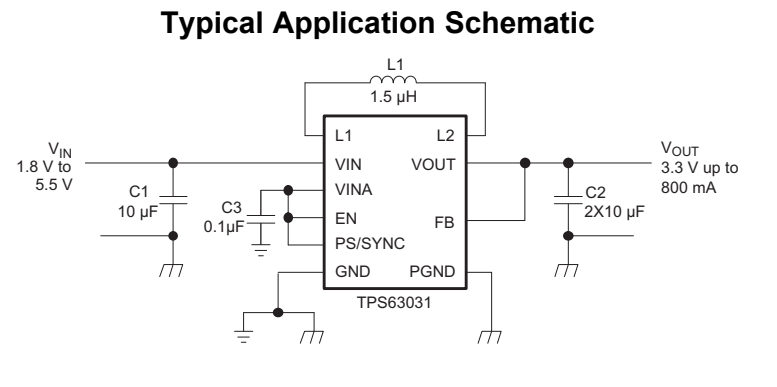

Your circuit · U5 TPS63031DSKR

Original schematic crop. Repeated net labels represent electrical connections. Overlapping symbol labels are clarified below; this is a transcription, not a new schematic.
| Connection | Actual design |
|---|
| Input: VIN pin 5, VINA pin 8 | VSYS from the charger |
| Output: VOUT pin 1 | REG_3V3 → R24 (0 Ω, outside crop) → +3V3 rail |
| Feedback: FB pin 10 | REG_3V3, directly connected to VOUT |
| Inductor: between pins 4 and 2 | L2, 2.2 µH |
| Enable: EN pin 6 | SW8 connects to VSYS for ON or GND for OFF; R20 adds a 100 kΩ pull-down outside crop |
| PS/SYNC pin 7 | GND: power-save mode enabled |
| C3 / C38 | 10 µF input / 100 nF control-supply bypass |
| C4 + C37 | Two 10 µF output capacitors |
| C39 | Additional 10 µF on VSYS, local to charger output |
Follow the power
USB / battery → BQ24074 OUT (VSYS) → U5 → 3.3 V → ESP32 and display circuitry.
TI reference · fixed 3.3 V version

Official TPS63031 datasheet · Saved PDF
Start at page 1 for conversion modes and page 3 for the fixed-output version and pin functions.
| First checks | What to compare |
|---|
| Input operating range | 1.8–5.5 V versus actual VSYS |
| Output version | TPS63031 is fixed at 3.3 V; TPS63030 is adjustable |
| Feedback wiring | Fixed-output version senses VOUT directly |
The reference uses 1.5 µH; our design uses 2.2 µH. This needs an inductor/ripple/transient check, not automatic rejection or approval.
Open full datasheet pages
Current capability: prototype acceptance, measurements pending
The supply must support an active device. Do not use low sleep current or modem-sleep averages to justify regulator sizing.
| Evidence | Meaning for this review |
|---|
| ESP32-S3-MINI-1: Wi-Fi TX peaks up to 355 mA in the listed test conditions | A reference load point, not a guaranteed ceiling for the entire application. |
| Espressif recommends a supply capable of at least 500 mA | Allocate supply capability for the ESP32, then account for display and other loads plus margin. |
| TPS63031: 800 mA output in step-down at VIN 3.6–5.5 V; up to 500 mA in boost above 2.4 V | Low-battery boost operation is the critical case. The 1 A switch headline is not an output-current rating. |
Review conclusion: topology and nominal voltage are suitable; current margin is not yet established. Check the combined load, minimum switch-current limit, inductor rating, effective capacitance and load-step behavior before accepting this regulator.
Module current table, page 28 · Espressif supply guidance · Regulator capability
USB input power is a separate constraint: a bigger regulator cannot make sustained excess consumption disappear. For continuous plugged-in operation, verify that the battery is not steadily discharging under the intended workload.
Provisional load estimate
| 3.3 V load | Allowance | Basis |
|---|
| ESP32 Wi-Fi TX | 355 mA | Listed datasheet test figure; not a universal maximum |
| Display and boost | 50 mA | Planning assumption; panel lists 3.5 mA typical at 3.0 V but no peak maximum |
| Other rail loads | 10 mA | Planning allowance |
| Total estimate | 415 mA | Not a worst-case guarantee |
At 3.0 V input and assumed 85% efficiency: about 537 mA from VSYS. Allocating 500 mA for ESP32 supply capability instead gives 560 mA total before further margin. Low-battery capability remains open.
ESP32 current table · Panel power table
Decision: keep the existing hardware without an external supervisor. Use firmware low-battery detection and deep sleep, with internal ESP32 brownout detection enabled and pack protection as backup. Thresholds and recovery behavior require implementation and testing. This does not establish regulator current margin.